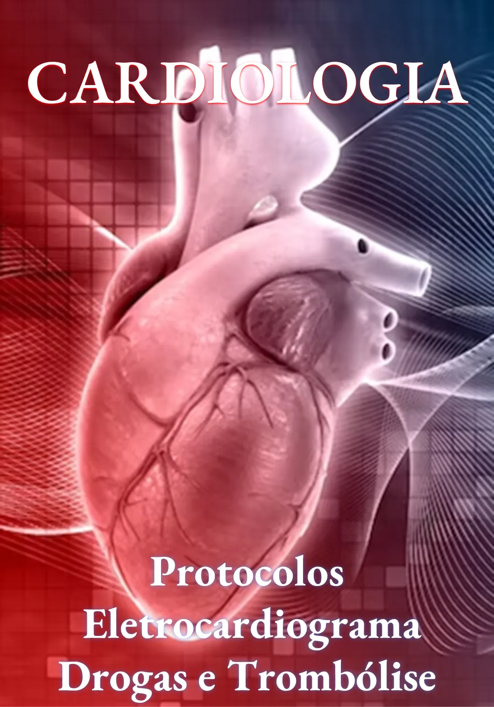
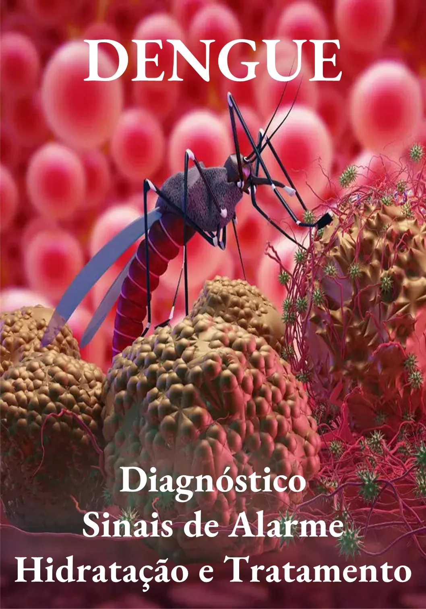

Protocolos Pediatria
1. INTUBAÇÃO, SEDAÇÃO E ANALGESIA
1.1 DROGAS VASOATIVAS E INOTRÓPICOS
1.2 ANTICOAGULAÇÃO e REVERSÃO
1.3 TROMBÓLISE: IAM, AVC E TEP
2. POTÁSSIO: HIPOCALEMIA E HIPERCALEMIA
2.1 SÓDIO: HIPONATREMIA E HIPERNATREMIA
2.2 MAGNÉSIO: HIPOMAGNESEMIA
2.3 Hiperglicemia: CAD e EHH
3. Protocolo Sepse (completo)
3.1 Protocolo Sepse (BAM)

4. Protocolos Cardiologia (completo)
4.1 ECG COM SUPRA ST: IAM E DIAGNÓSTICO DIFERENCIAL
4.2 CARDIOVERSÃO ELÉTRICA (TAQUIARRITMIAS)
4.3 Protocolo Anticoagulação e Reversão Sangramento
4.4 TV x TSV: CRITÉRIOS DE BRUGADA, VERECKEI E SANTOS
5. Protocolo AVC (completo)
5.1 Protocolo AVC (BAM)
5.2 Protocolo AVC (Escala NIHSS)
5.3 Controle Pressão AVC
5.4 CRISE CONVULSIVA
6. Protocolo Cuidados Paliativos (BAM)

7.Protocolo Dengue